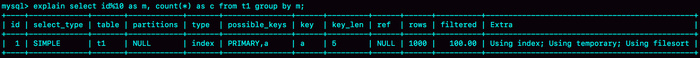
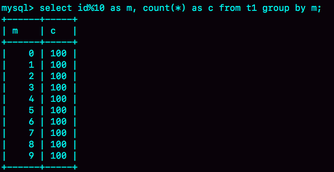

- 00 开篇词 这一次，让我们一起来搞懂MySQL.md.html
- 01 基础架构：一条SQL查询语句是如何执行的？.md.html
- 02 日志系统：一条SQL更新语句是如何执行的？.md.html
- 03 事务隔离：为什么你改了我还看不见？.md.html
- 04 深入浅出索引（上）.md.html
- 05 深入浅出索引（下）.md.html
- 06 全局锁和表锁 ：给表加个字段怎么有这么多阻碍？.md.html
- 07 行锁功过：怎么减少行锁对性能的影响？.md.html
- 08 事务到底是隔离的还是不隔离的？.md.html
- 09 普通索引和唯一索引，应该怎么选择？.md.html
- 10 MySQL为什么有时候会选错索引？.md.html
- 11 怎么给字符串字段加索引？.md.html
- 12 为什么我的MySQL会“抖”一下？.md.html
- 13 为什么表数据删掉一半，表文件大小不变？.md.html
- 14 count()这么慢，我该怎么办？.md.html
- 15 答疑文章（一）：日志和索引相关问题.md.html
- 16 “order by”是怎么工作的？.md.html
- 17 如何正确地显示随机消息？.md.html
- 18 为什么这些SQL语句逻辑相同，性能却差异巨大？.md.html
- 19 为什么我只查一行的语句，也执行这么慢？.md.html
- 20 幻读是什么，幻读有什么问题？.md.html
- 21 为什么我只改一行的语句，锁这么多？.md.html
- 22 MySQL有哪些“饮鸩止渴”提高性能的方法？.md.html
- 23 MySQL是怎么保证数据不丢的？.md.html
- 24 MySQL是怎么保证主备一致的？.md.html
- 25 MySQL是怎么保证高可用的？.md.html
- 26 备库为什么会延迟好几个小时？.md.html
- 27 主库出问题了，从库怎么办？.md.html
- 28 读写分离有哪些坑？.md.html
- 29 如何判断一个数据库是不是出问题了？.md.html
- 30 答疑文章（二）：用动态的观点看加锁.md.html
- 31 误删数据后除了跑路，还能怎么办？.md.html
- 32 为什么还有kill不掉的语句？.md.html
- 33 我查这么多数据，会不会把数据库内存打爆？.md.html
- 34 到底可不可以使用join？.md.html
- 35 join语句怎么优化？.md.html
- 36 为什么临时表可以重名？.md.html
- 37 什么时候会使用内部临时表？.md.html
- 38 都说InnoDB好，那还要不要使用Memory引擎？.md.html
- 39 自增主键为什么不是连续的？.md.html
- 40 insert语句的锁为什么这么多？.md.html
- 41 怎么最快地复制一张表？.md.html
- 42 grant之后要跟着flush privileges吗？.md.html
- 43 要不要使用分区表？.md.html
- 44 答疑文章（三）：说一说这些好问题.md.html
- 45 自增id用完怎么办？.md.html
- 我的MySQL心路历程.md.html
- 结束语 点线网面，一起构建MySQL知识网络.md.html
- 捐赠
37 什么时候会使用内部临时表？
在[第 16]和[第 34]篇文章中，我分别和你介绍了 sort buffer、内存临时表和 join buffer。这三个数据结构都是用来存放语句执行过程中的中间数据，以辅助 SQL 语句的执行的。其中，我们在排序的时候用到了 sort buffer，在使用 join 语句的时候用到了 join buffer。
然后，你可能会有这样的疑问，MySQL 什么时候会使用内部临时表呢？
今天这篇文章，我就先给你举两个需要用到内部临时表的例子，来看看内部临时表是怎么工作的。然后，我们再来分析，什么情况下会使用内部临时表。
union 执行流程
为了便于量化分析，我用下面的表 t1 来举例。
create table t1(id int primary key, a int, b int, index(a));
delimiter ;;
create procedure idata()
begin
declare i int;
set i=1;
while(i<=1000)do
insert into t1 values(i, i, i);
set i=i+1;
end while;
end;;
delimiter ;
call idata();
然后，我们执行下面这条语句：
(select 1000 as f) union (select id from t1 order by id desc limit 2);
这条语句用到了 union，它的语义是，取这两个子查询结果的并集。并集的意思就是这两个集合加起来，重复的行只保留一行。
下图是这个语句的 explain 结果。
图 1 union 语句 explain 结果
可以看到：
- 第二行的 key=PRIMARY，说明第二个子句用到了索引 id。
- 第三行的 Extra 字段，表示在对子查询的结果集做 union 的时候，使用了临时表 (Using temporary)。
这个语句的执行流程是这样的：
- 创建一个内存临时表，这个临时表只有一个整型字段 f，并且 f 是主键字段。
- 执行第一个子查询，得到 1000 这个值，并存入临时表中。
- 执行第二个子查询：
- 拿到第一行 id=1000，试图插入临时表中。但由于 1000 这个值已经存在于临时表了，违反了唯一性约束，所以插入失败，然后继续执行；
- 取到第二行 id=999，插入临时表成功。
- 从临时表中按行取出数据，返回结果，并删除临时表，结果中包含两行数据分别是 1000 和 999。
这个过程的流程图如下所示：
图 2 union 执行流程
可以看到，这里的内存临时表起到了暂存数据的作用，而且计算过程还用上了临时表主键 id 的唯一性约束，实现了 union 的语义。
顺便提一下，如果把上面这个语句中的 union 改成 union all 的话，就没有了“去重”的语义。这样执行的时候，就依次执行子查询，得到的结果直接作为结果集的一部分，发给客户端。因此也就不需要临时表了。
图 3 union all 的 explain 结果
可以看到，第二行的 Extra 字段显示的是 Using index，表示只使用了覆盖索引，没有用临时表了。
group by 执行流程
另外一个常见的使用临时表的例子是 group by，我们来看一下这个语句：
select id%10 as m, count(*) as c from t1 group by m;
这个语句的逻辑是把表 t1 里的数据，按照 id%10 进行分组统计，并按照 m 的结果排序后输出。它的 explain 结果如下：

图 4 group by 的 explain 结果
在 Extra 字段里面，我们可以看到三个信息：
- Using index，表示这个语句使用了覆盖索引，选择了索引 a，不需要回表；
- Using temporary，表示使用了临时表；
- Using filesort，表示需要排序。
这个语句的执行流程是这样的：
- 创建内存临时表，表里有两个字段 m 和 c，主键是 m；
- 扫描表 t1 的索引 a，依次取出叶子节点上的 id 值，计算 id%10 的结果，记为 x；
- 如果临时表中没有主键为 x 的行，就插入一个记录 (x,1);
- 如果表中有主键为 x 的行，就将 x 这一行的 c 值加 1；
- 遍历完成后，再根据字段 m 做排序，得到结果集返回给客户端。
这个流程的执行图如下：
图 5 group by 执行流程
图中最后一步，对内存临时表的排序，在[第 17 篇文章]中已经有过介绍，我把图贴过来，方便你回顾。

图 6 内存临时表排序流程
其中，临时表的排序过程就是图 6 中虚线框内的过程。
接下来，我们再看一下这条语句的执行结果：

图 7 group by 执行结果
如果你的需求并不需要对结果进行排序，那你可以在 SQL 语句末尾增加 order by null，也就是改成：
select id%10 as m, count(*) as c from t1 group by m order by null;
这样就跳过了最后排序的阶段，直接从临时表中取数据返回。返回的结果如图 8 所示。

图 8 group + order by null 的结果（内存临时表）
由于表 t1 中的 id 值是从 1 开始的，因此返回的结果集中第一行是 id=1；扫描到 id=10 的时候才插入 m=0 这一行，因此结果集里最后一行才是 m=0。
这个例子里由于临时表只有 10 行，内存可以放得下，因此全程只使用了内存临时表。但是，内存临时表的大小是有限制的，参数 tmp_table_size 就是控制这个内存大小的，默认是 16M。
如果我执行下面这个语句序列：
set tmp_table_size=1024;
select id%100 as m, count(*) as c from t1 group by m order by null limit 10;
把内存临时表的大小限制为最大 1024 字节，并把语句改成 id % 100，这样返回结果里有 100 行数据。但是，这时的内存临时表大小不够存下这 100 行数据，也就是说，执行过程中会发现内存临时表大小到达了上限（1024 字节）。
那么，这时候就会把内存临时表转成磁盘临时表，磁盘临时表默认使用的引擎是 InnoDB。 这时，返回的结果如图 9 所示。
图 9 group + order by null 的结果（磁盘临时表）
如果这个表 t1 的数据量很大，很可能这个查询需要的磁盘临时表就会占用大量的磁盘空间。
group by 优化方法 – 索引
可以看到，不论是使用内存临时表还是磁盘临时表，group by 逻辑都需要构造一个带唯一索引的表，执行代价都是比较高的。如果表的数据量比较大，上面这个 group by 语句执行起来就会很慢，我们有什么优化的方法呢？
要解决 group by 语句的优化问题，你可以先想一下这个问题：执行 group by 语句为什么需要临时表？
group by 的语义逻辑，是统计不同的值出现的个数。但是，由于每一行的 id%100 的结果是无序的，所以我们就需要有一个临时表，来记录并统计结果。
那么，如果扫描过程中可以保证出现的数据是有序的，是不是就简单了呢？
假设，现在有一个类似图 10 的这么一个数据结构，我们来看看 group by 可以怎么做。
图 10 group by 算法优化 - 有序输入
可以看到，如果可以确保输入的数据是有序的，那么计算 group by 的时候，就只需要从左到右，顺序扫描，依次累加。也就是下面这个过程：
- 当碰到第一个 1 的时候，已经知道累积了 X 个 0，结果集里的第一行就是 (0,X);
- 当碰到第一个 2 的时候，已经知道累积了 Y 个 1，结果集里的第二行就是 (1,Y);
按照这个逻辑执行的话，扫描到整个输入的数据结束，就可以拿到 group by 的结果，不需要临时表，也不需要再额外排序。
你一定想到了，InnoDB 的索引，就可以满足这个输入有序的条件。
在 MySQL 5.7 版本支持了 generated column 机制，用来实现列数据的关联更新。你可以用下面的方法创建一个列 z，然后在 z 列上创建一个索引（如果是 MySQL 5.6 及之前的版本，你也可以创建普通列和索引，来解决这个问题）。
alter table t1 add column z int generated always as(id % 100), add index(z);
这样，索引 z 上的数据就是类似图 10 这样有序的了。上面的 group by 语句就可以改成：
select z, count(*) as c from t1 group by z;
优化后的 group by 语句的 explain 结果，如下图所示：
图 11 group by 优化的 explain 结果
从 Extra 字段可以看到，这个语句的执行不再需要临时表，也不需要排序了。
group by 优化方法 – 直接排序
所以，如果可以通过加索引来完成 group by 逻辑就再好不过了。但是，如果碰上不适合创建索引的场景，我们还是要老老实实做排序的。那么，这时候的 group by 要怎么优化呢？
如果我们明明知道，一个 group by 语句中需要放到临时表上的数据量特别大，却还是要按照“先放到内存临时表，插入一部分数据后，发现内存临时表不够用了再转成磁盘临时表”，看上去就有点儿傻。
那么，我们就会想了，MySQL 有没有让我们直接走磁盘临时表的方法呢？
答案是，有的。
在 group by 语句中加入 SQL_BIG_RESULT 这个提示（hint），就可以告诉优化器：这个语句涉及的数据量很大，请直接用磁盘临时表。
MySQL 的优化器一看，磁盘临时表是 B+ 树存储，存储效率不如数组来得高。所以，既然你告诉我数据量很大，那从磁盘空间考虑，还是直接用数组来存吧。
因此，下面这个语句
select SQL_BIG_RESULT id%100 as m, count(*) as c from t1 group by m;
的执行流程就是这样的：
- 初始化 sort_buffer，确定放入一个整型字段，记为 m；
- 扫描表 t1 的索引 a，依次取出里面的 id 值, 将 id%100 的值存入 sort_buffer 中；
- 扫描完成后，对 sort_buffer 的字段 m 做排序（如果 sort_buffer 内存不够用，就会利用磁盘临时文件辅助排序）；
- 排序完成后，就得到了一个有序数组。
根据有序数组，得到数组里面的不同值，以及每个值的出现次数。这一步的逻辑，你已经从前面的图 10 中了解过了。
下面两张图分别是执行流程图和执行 explain 命令得到的结果。
图 12 使用 SQL_BIG_RESULT 的执行流程图
图 13 使用 SQL_BIG_RESULT 的 explain 结果
从 Extra 字段可以看到，这个语句的执行没有再使用临时表，而是直接用了排序算法。
基于上面的 union、union all 和 group by 语句的执行过程的分析，我们来回答文章开头的问题：MySQL 什么时候会使用内部临时表？
- 如果语句执行过程可以一边读数据，一边直接得到结果，是不需要额外内存的，否则就需要额外的内存，来保存中间结果；
- join_buffer 是无序数组，sort_buffer 是有序数组，临时表是二维表结构；
- 如果执行逻辑需要用到二维表特性，就会优先考虑使用临时表。比如我们的例子中，union 需要用到唯一索引约束， group by 还需要用到另外一个字段来存累积计数。
小结
通过今天这篇文章，我重点和你讲了 group by 的几种实现算法，从中可以总结一些使用的指导原则：
- 如果对 group by 语句的结果没有排序要求，要在语句后面加 order by null；
- 尽量让 group by 过程用上表的索引，确认方法是 explain 结果里没有 Using temporary 和 Using filesort；
- 如果 group by 需要统计的数据量不大，尽量只使用内存临时表；也可以通过适当调大 tmp_table_size 参数，来避免用到磁盘临时表；
- 如果数据量实在太大，使用 SQL_BIG_RESULT 这个提示，来告诉优化器直接使用排序算法得到 group by 的结果。
最后，我给你留下一个思考题吧。
文章中图 8 和图 9 都是 order by null，为什么图 8 的返回结果里面，0 是在结果集的最后一行，而图 9 的结果里面，0 是在结果集的第一行？
你可以把你的分析写在留言区里，我会在下一篇文章和你讨论这个问题。感谢你的收听，也欢迎你把这篇文章分享给更多的朋友一起阅读。
© 2019 - 2023 Liangliang Lee. Powered by gin and hexo-theme-book.